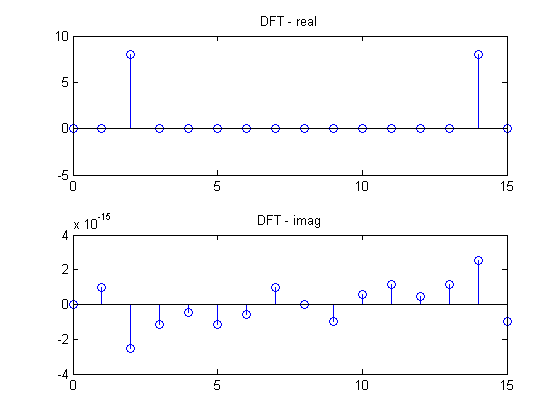

N = 16;
n = 0:(N-1);
Nc = 500;
nu = 2;
f = cos(2*pi*nu * n/N);
fc = cos(2*pi*nu*(1:Nc)/Nc);
F = fft(f);
fprintf('Direct values from f and F vectors\n');
fprintf('f[0]= %f\n',f(1));
fprintf('F[0]= %f\n',F(1));
fprintf('Area Theorem Verification\n');
fprintf('f[0]= %f\n' , sum(F)/N);
fprintf('F[0]= %f\n' , sum(f));
fprintf('Parsevals Theorem Verification \n');
fprintf('The sum of f[n]^2 where n = 0 to N-1 is: %f\n',norm(f,2)^2);
fprintf('The sum of (F[n]^2)/N where n = 0 to N-1 is: %f\n',(norm(F,2)^2)/N);
subplot(2,1,1), stem (n, real(F));
title('DFT - real')
subplot(2,1,2), stem (n, imag(F));
title('DFT - imag')
Direct values from f and F vectors
f[0]= 1.000000
F[0]= 0.000000
Area Theorem Verification
f[0]= 1.000000
F[0]= -0.000000
Parsevals Theorem Verification
The sum of f[n]^2 where n = 0 to N-1 is: 8.000000
The sum of (F[n]^2)/N where n = 0 to N-1 is: 8.000000
